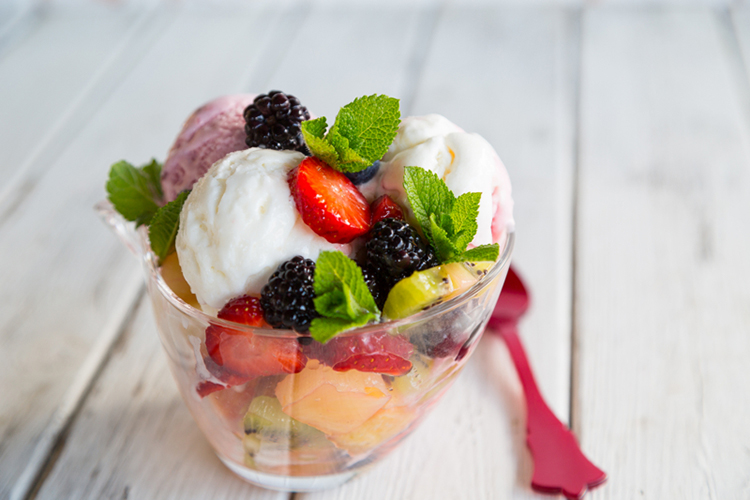

Ice Cream and Fruit
Healthy or not healthy? That is the question

Ingredients
- Ice cream (flavor is up to opinions - I like vanilla most)
- Fruits of choice (usually blackberries, raspberries, strawberries
Instructions
- Slice up fruit
- Scoop a few scoops of ice cream into a cup and add fruit
- Feast on your cooling dessert